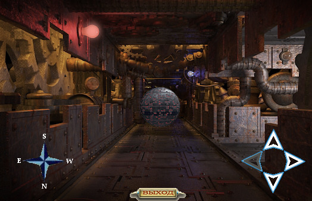
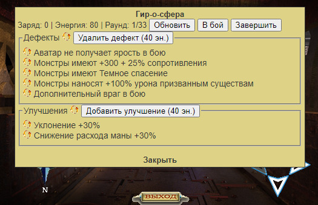

За многие годы существования игры Гир-о-куб никогда не был популярной локацией – соотношение профита от его исследования и сложности боев (и поломки) всегда было не на стороне игроков. Игровые механики, связанные с Гир-о-кубом, множество раз менялись, дополнялись различными плюшками (например Рекомбинатор), однако этого было недостаточно для повышения привлекательности куба. Недавно вышедшее обновление с Гир-о-сферами сильно расширило наполненность локации, и мы попробуем разобраться, стал ли от этого Гир-о-куб лучше.
Что такое Гир-о-сферы
Вводную информацию по сферам можно прочесть в хелпе самой игры. Вкратце, это такой боевой ивент, который можно обнаружить только в Гир-о-кубе. В ходе ивента необходимо победить несколько волн монстров со случайными наборами бафов и дебафов (как самого персонажа, так и его противников). Напоминает Испытание тактики в Гильдии воинов, только без регенерации здоровья и маны и с эффектами из Открытых сражений. В награду игрок получает случайные шахтные ресурсы, руны 1-3 типа, гиры и Гир-о-вещи.

Награда за прохождение Сфер вполне ощутимая – и руны, и гиры падают часто, что очень приятно. Бои сложные – у сильных персонажей проблемы могут возникнуть уже на 20 волне монстров (при 85 волн на 40 этаже гир-о-куба). Сама концепция боев (когда нет таймера, нет необходимости далеко бегать и т.д.) позволяет в достаточно комфортном режиме проходить гир-о-сферы – найти сферу и засесть с ней на пару дней без загородной или шахтной суеты.
Теплится надежда на то, что текущее исполнение Гир-о-сфер не потерпит значительных изменений (особенно в части награды за их прохождение).
Плюсы Гир-о-сфер
- Хорошая награда. Для высокоуровневых игроков самое оно – руны, гиры (в том числе для рерола рун в рекомбинаторе).
- Интересные и сложные бои. Практически каждый новый бой отличается от предыдущего – набор врагов случайный, эффекты случайные. Есть возможность проверить свои силы.
- Одно из лучших соотношений поломка/награда в игре. За гипотетические 50 боев в сфере можно получить руны третьего типа или гиры высокого уровня – подобной альтернативы в игре практически нигде больше нет.
- Сферы и награда за них отлично стыкуется с Рекомбинатором и сетом из Гир-о-куба. Награда за победу над сферой неплохо вписывается в другой функционал куба – то есть игрок может получить ненужную руну за прохождение сферы и тут же набор гиров на её реролл в рекомбинаторе – это очень удобно. Одновременно с этим, сферы являются отличным источников редких гиров для нового сета из куба.
- Можно фармить толпой/кланом. Если игроки доберутся до непроходимых волн, можно позвать на помощь сокланов, что в некоторой степени расширяет межаватарское взаимодействие – например, можно нанять сильного наемника на помощь в прохождении сфер.
- Гибкая сложность. Игроку не требуется полностью зачищать сферу, проходя все волны – можно завершить испытание раньше и получить награду за то, что уже прошел. То есть сферы актуальны как для сильных, так и для средних по силе игроков.
- Удобно играть. Нет таймера прохождения, зависимости от других игроков и т.д. – просто находишь сферу и играешься с ней когда удобно.Подходит для тех, кто не может отдавать игре много своего фокуса.
Недостатки Гир-о-сфер
- Не работает режим экономии маны. Хоть это и недостаток, но он вполне логично вписывается в механику сфер – пока в эти бои можно вмешиваться других игрокам, отключение режима экономии обосновано, как ограничивающий скорость фарма фактор. Ну и доп. стимул купить/потратить расходники из волшебного магазинчика на регенерацию маны – снежки, сосульки, ледышки.
- Некоторые комбинации эффектов в сфере делают монстров ну уж очень сильными. Например, суперуворотливые боты, которых никак не убить в ближнем бою. Частично контрится реролом эффектов и вмешательством кентов из клана/наемников.
- Страшно, что могут порезать награду. Как, например, с Храмом солнца (руна+древняя вещь -> руна или древняя вещь).
- Награда за сферу ломает нормирование наград в других активностях (инфляция наград). Награда за прохождение сферы на уровне или даже превышает награду за прохождение разлома, несмотря на то, что разлом на порядок сложнее в прохождении и требует несколько часов напряженной игры. Хотелось бы, чтобы награда и в более высоких по сложности активностях проскалировалась, глядя на сферы (а не сферы были порезаны).
- Не подходит для фарма серебра.
Неиспользованная энергия после завершения ивента не конвертируется в заряд. То есть отсутствует мотивация усложнить себе бои, рискнув, экономя энергию с целью получить большую награду в итоге.Изменено в обновлении от 16.07.2021 07:59.
Мнение автора статьи
На мой взгляд, введение сфер в Гир-о-куб закрыло многие дыры в данной локации, связанные с фармом гир-о-сета, его поддержкой гирами, рекомбинатором и т.д. Награда за сферы гармонично вписывается не только в контент гир-о-куба – руны 2-3 типа всегда в ходу и нужны всем, поэтому гир-о-куб может привлечь в свои лабиринты новых искателей, что, вероятно, повысит и частоту встречаемости гиров на аукционе.
Если не будет серьёзных изменений в награде за прохождение сфер, то это обновление можно считать одним из лучших за последние годы, наравне с активностью Храма солнца.
Все особенности взаимодействия со Сферами.
- Сферы находятся на точках из которых есть несколько выходов – перекрестки. Только 1 сфера на 1 этаж.
- Сферу можно найти и при перемещении в отряде. Каждый игрок должен самостоятельно обновлять основной фрейм, так как для каждого участника отряда сферы расположены в разных местах лабиринта.
- Экономия маны не работает.
- Если Сфера активирована, то любое перемещение по Гир-о-кубу приведет к исчезновению Сферы без возможности раннего завершения или продолжения. Если активации сферы игроком не было, можно свободно перемещаться по лабиринту – сфера будет в точке обнаружения до перезахода в Куб.
- В бои со сферой можно вмешиваться сокланам и наемникам.
- Поражение в бою сферы закрывает к ней доступ. Награду после поражения получить никак нельзя.
- Макс. количество раундов = этаж*2 + 5.
- За 1 раунд игрок получает 3 + 0.04*этаж Заряда
- Награда зависит от накопленных зарядов:
- Ресурсы: 6 зарядов за 2-3 случайных ресурса (от кварца до обсидиана)
- Гиры:
- B-F: 20 зарядов за штуку
- G-K: 30 зарядов за штуку
- L-P: 45 зарядов за штуку
- Q-S: 60 зарядов за штуку
- Руны:
- Тип 1: 30 зарядов за штуку
- Тип 2: 65 зарядов за штуку
- Тип 3: 90 зарядов за штуку
- Случайная Гир-о-Вещь: 65 зарядов за штуку
- Серебро: 100 серебра за 1 заряд
- Неиспользованная Энергия конвертируется в Заряды при завершении боев за Сферу в соотношении 11 к 1. Таким образом, можно усложнить себе бои за счет экономии энергии, но получить более весомую награду.
- Можно добавить и убрать только 2 дефекта/улучшения. В итоге можно сделать себе 4 (2+2) улучшения и 3 (5-2) дефекта.
- Стоимость устранения/добавления дефекта/улучшения 40 и 80 энергии (40 за первое удаление/добавление и 80 за второе).
- Гиры дают разное количество энергии. От 0 до 460.
| B | C | D | F | G | H | J | K | L | M | N | P | Q | R | S |
| 0 | 5 | 10 | 20 | 35 | 55 | 80 | 110 | 145 | 185 | 230 | 280 | 335 | 395 | 460 |
- Обновление всех эффектов и обновление всех дефектов/улучшений стоит 1 энергию.
- Обновление конкретного эффекта/улучшения – 2 энергии.
- В одном бою не могут встретиться одинаковые улучшения или дефекты. Только если разной градации (например, уворотливость +20% и уворотливость +30%)
- Эффекты на увеличение маны и здоровья аватара увеличивают и текущую, и максимальную ману/здоровье. То есть, если у вас 10 000/20 000 маны и у вас бонус +40% маны, то в начале боя у вас будет 14 000 / 28 000 маны.
- Сфера может появиться прямо на входе на этаж. После телепортации в Гир-о-куб, например.
- Имеется 74 дефекта и 46 улучшений.
- Дефекты/улучшения действуют как на монстров, так и на аватара (негативно или положительно). То есть улучшение может усилить аватара или ослабить монстров, как и дефект – усилит монстров или ослабит аватара.
- Частота встречаемости в наборе дефектов и улучшений различается для эффектов. Было проанализировано 1000+ дефектов и 1000+ улучшений у сфер, статистика ниже:
| Дефекты | Встречаемость | Улучшения | Встречаемость |
|---|---|---|---|
| Монстры имеют +200 + 25% защиты | 23 | Постоянный эффект Встречный ветер | 32 |
| Монстры начинают сражения с 9 накопленными ОД | 23 | Мана увеличена на 40% | 30 |
| Монстры имеют отражение боли в первые 70 секунд боя | 22 | Физический урон увеличен на 30% | 30 |
| Дополнительный враг в бою | 21 | Здоровье увеличено на 50% | 30 |
| Монстры имеют постоянный эффект Оковы боли | 20 | Контрудар +40% | 29 |
| Монстры имеют вампиризм 50% | 19 | Враги начинают бой с эффектом Паралич | 28 |
| Параметр Разрушитель монстров увеличен на 100% | 18 | +5 ОД на действие всем врагам | 28 |
| Параметр Призыватель монстров увеличен на 100% | 18 | Ангел-хранитель помогает аватару | 27 |
| Монстры имеют +1000 + 25% здоровье | 18 | +2 энергии за следующий раунд | 27 |
| Враги начинают бой с эффектом Оберег света | 18 | Случайный враг слабее на 50% | 26 |
| Аватар имеет Черные язвы в течение всего боя | 17 | Снижение расхода маны +30% | 25 |
| Монстры начинают бой с эффектом Ядовитая завеса | 17 | Крысиный король помогает аватару | 25 |
| Монстры имеют +500 + 35% брони | 17 | +3 энергии за следующий раунд | 25 |
| Монстры имеют -2 ОД на действие | 16 | +3 заряда за следующий раунд | 25 |
| Монстры имеют +300 + 35% критический удар | 16 | Атака +300 + 30% | 25 |
| Монстры имеют +1000 + 35% урон | 16 | Аватар начинает бой с эффектом Призрачное бессмертие | 23 |
| Монстры начинают сражение с Призрачным бессмертием | 16 | Параметр Заклинатель увеличен на 40% | 23 |
| Случайный враг имеет увеличенные на 60% параметры | 16 | Ударные заклинания игнорируют 50% сопротивления целей | 22 |
| Случайный враг имеет увеличенные на 100% параметры | 15 | Блок щитом +35% | 22 |
| Монстры имеют удвоенный щит брони | 15 | Аватар начинает бой с эффектом Ядовитая завеса | 22 |
| Монстры имеют критический урон +100% | 15 | Сопротивление ожогам и отраженному урону +70% | 21 |
| Монстры имеют постоянную Жажду жизни | 15 | Параметр Призыватель увеличен на 30% | 21 |
| Аватар начинает сражение с Параличом | 15 | Постоянный эффект Жажда жизни | 21 |
| Монстры имеют 100% шанс кровотечения при критическом ударе | 15 | +3 ОД на действие всем врагам | 21 |
| Монстры имеют +2000 + 35% здоровье | 15 | Параметр Разрушитель увеличен на 30% | 20 |
| Аватар начинает сражение с Опустошением разума | 15 | Двойной удар +30% | 20 |
| Монстры начинают бой с эффектом Носитель чумы | 15 | Враги слабее на 15% | 20 |
| Аватар начинает сражение без щита брони | 14 | Аватар начинает бой с эффектом Оберег света | 20 |
| Монстры имеют магический вампиризм 100% | 14 | -1 враг в бою | 20 |
| Монстры имеют уклонение +25% | 14 | +20 накопленных ОД | 19 |
| Монстры имеют +300 + 25% сопротивления | 14 | Враги имеют постоянный эффект Доминион разрушения | 19 |
| Монстры имеют +250 + 25% устойчивость | 14 | Сопротивление временным эффектам +35% | 19 |
| Огненные стены защищают врагов | 14 | Урон по призванным существам +50% | 19 |
| Монстры имеют двойной удар +50% | 13 | Уклонение от заклинаний +60% | 19 |
| Монстры имеют +500 + 25% урон | 13 | Отражение урона +150% | 19 |
| Аватар сражается под Смертным ливнем х3 | 13 | Аватар начинает бой с эффектом Носитель чумы | 19 |
| Монстры имеют поглощение урона +15% | 13 | Аватар начинает бой с эффектом Договор со смертью | 18 |
| Монстры имеют +400 + 35% атаки | 13 | Урон щитам +50% | 18 |
| Монстры имеют блок щитом +30% | 13 | Щит брони +80% | 18 |
| Монстры имеют +600 + 35% сопротивления | 13 | +2 заряда за следующий раунд | 17 |
| Аватар начинает сражение без щита сопротивления | 13 | Случайный дефект не будет работать | 17 |
| Все параметры аватара снижены на 15% | 13 | +15 накопленных ОД | 17 |
| Монстры имеют Последний шанс | 13 | Критический урон +100% | 15 |
| Монстры наносят +100% урона призванным существам | 13 | Уклонение +30% | 15 |
| Монстры имеют отражение боли весь бой | 13 | Щит сопротивления +100% | 14 |
| Монстры имеют +500 + 35% устойчивость | 13 | Поглощение урона +15% | 12 |
| Монстры имеют уклонение от заклинаний +60% | 13 | ||
| Монстры имеют Темное спасение | 13 | ||
| Монстры начинают сражения с 15 накопленными ОД | 12 | ||
| Дополнительный Послушник тени в бою | 12 | ||
| Монстры имеют +150 + 25% критический удар | 12 | ||
| Все параметры аватара снижены на 10% | 12 | ||
| Ангел-хранитель помогает врагам | 11 | ||
| Три дополнительных Проклятья в бою | 11 | ||
| Монстры имеют поглощение урона +20% | 11 | ||
| Параметр Заклинатель монстров увеличен на 100% | 11 | ||
| Монстры имеют +150 + 35% реакции | 11 | ||
| Монстры имеют -3 ОД на действие | 11 | ||
| Параметр Разрушитель монстров увеличен на 60% | 10 | ||
| Монстры имеют -4 ОД на действие | 10 | ||
| Монстры имеют +250 + 25% брони | 10 | ||
| Аватар сражается под Смертным ливнем х6 | 10 | ||
| Монстры имеют +400 + 35% защиты | 10 | ||
| Монстры имеют уклонение +35% | 10 | ||
| Монстры имеют удвоенный щит сопротивления | 10 | ||
| Монстры имеют контрудар +50% | 9 | ||
| Монстры имеют +200 + 25% атаки | 9 | ||
| Крысиный король помогает врагам | 9 | ||
| Аватар не получает ярость в бою | 9 | ||
| Монстры имеют урон щитам +100% | 8 | ||
| Монстры имеют +100% маны | 8 | ||
| Дополнительный Жрец тени в бою | 8 | ||
| Дополнительная Тень забвения в бою | 7 | ||
| Монстры имеют +50% маны | 6 |